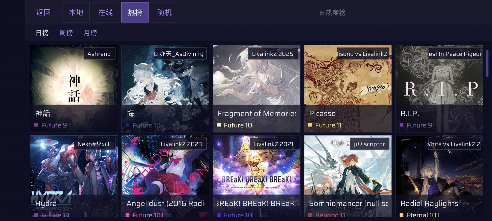
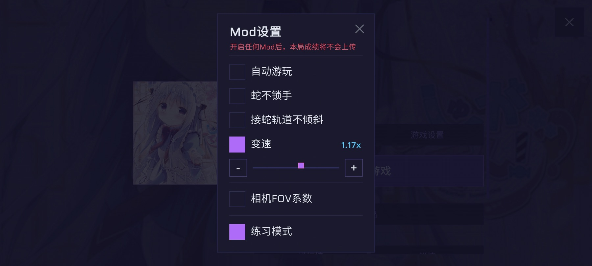
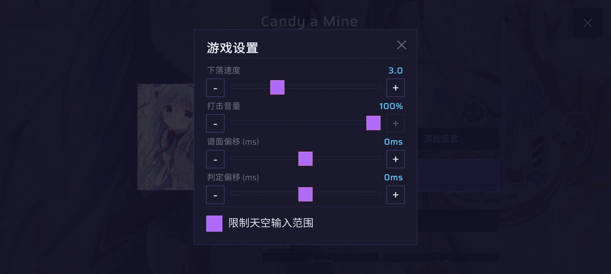
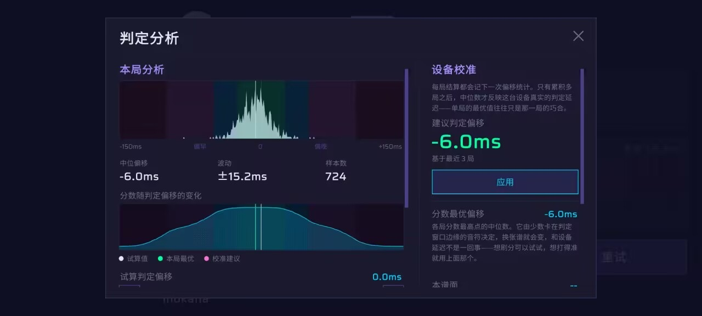
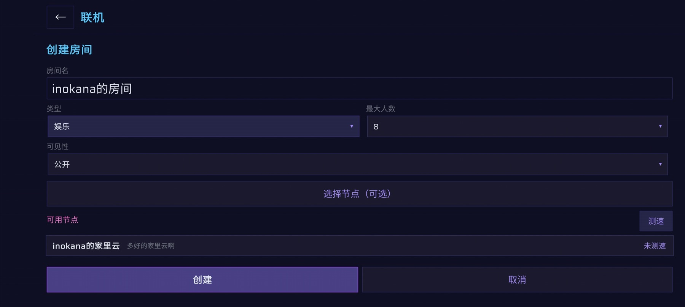

从安装到创作，
快速上手 Anoawa
Anoawa 是一款基于 Arcaea 玩法的社区音乐游戏。你可以导入 .aff 谱面、浏览社区曲库、联机游玩，也可以制作皮肤与谱面演出。
Quick start
第一次使用
完成安装后，按下面三步就能开始第一局。需要社区下载、排行榜或联机时再登录账号。
Step 01
下载与安装
Anoawa 提供 Android、iOS 与 Windows 三个平台。Android 与 Windows 的安装包可以直接下载，iOS 走 TestFlight 公测。
Feature map
主要功能
按你想完成的事情进入对应章节。每节都会标出游戏内入口和操作步骤。
Guide 01
谱面库与导入
谱面库包含“本地、在线、热榜、随机”四个标签。在线曲库支持搜索，以及按上传时间、游玩数、点赞数、时长或 BPM 排序。
导入本地谱面
- 选择谱面压缩包（ZIP / 7Z / RAR）或谱面文件夹。选择包含多个关卡子目录的文件夹时可以批量导入。
- 确认扫描出的关卡列表，点击“导入试试！”。音频会转码为 OGG，封面会自动压缩。
- 导入完成后，在“编辑谱面信息”补充曲师、谱师、画师等缺失字段。

谱面包需要包含什么
| 内容 | 命名 / 格式 | 说明 |
|---|---|---|
| 谱面 | 0.aff ~ 4.aff | 依次对应 Past、Present、Future、Beyond、Eternal |
| 音频 | base.* | MP3 / OGG / FLAC / WAV / AAC |
| 封面 | base.* | JPG / PNG / WebP 等常见图片格式 |
| 背景 | bg.* 或 background.* | 可以同时提供背景图和背景视频 |
| 歌曲信息 | songlist / slst | 读取曲名、曲师、BPM 等元数据 |
Guide 02
游玩与练习
在谱面详情中选择难度、调整流速并开始游戏。需要针对某一段练习时，可以打开 Mod 面板设置练习区间。
开始一局
- 选择一张谱面和要游玩的难度，按习惯调整流速。
- 需要练习时进入“Mod 设置”，打开练习模式并选择起止区间。
- 点击“开始游戏”。结算页可以查看成绩、点赞、重试与打开谱师资料。


- 任何 Mod 都会关闭排行榜上传。结算页会明确标记本局使用了 Mod。
- Mod 包含自动游玩、蛇不锁手、接蛇轨道不倾斜、变速、FOV 系数和练习模式。
- Early / Late 提示、高对比度模式、失焦暂停与防误触都可在设置中调整。
- 谱面详情中的“复制手元简介”会整理曲名、曲师、难度和谱师，方便发布视频。
Guide 03
延迟与判定校准
Anoawa 把延迟拆成两个设置。记住同一个方向即可：Late 多就调大，Early 多就调小。
谱面偏移
解决“音乐和画面对不上”。在设置页打开打击音效，让音效与第三拍重音重合。
判定偏移
解决“感觉点对了却不是 Pure”。需要通过多局打歌数据估算设备延迟。
推荐校准顺序
- 先用可视化校准调整谱面偏移，直到听感与画面同步。
- 正常打几首熟悉的歌。开 Mod 的对局不会进入设备校准统计。
- 积累足够局数后打开“判定分析”，查看右栏给出的建议判定偏移。
- 确认趋势稳定后点击“应用”，再继续游玩验证。

Guide 04
联机房间
联机使用社区部署的专用节点。公开房可以从大厅加入，私密房通过房间号邀请朋友。
创建或加入房间
- 先登录账号。刷新公开房列表，或输入 ID 加入私密房。
- 创建房间时设置名称、人数、公开性与模式；可先测速选择延迟最低的节点。
- 进入大厅后准备，选曲阶段每人投一张谱面，也可以投“任意”。
- 系统抽取谱面并同步下载进度；全员就绪后开始倒计时。

- 竞技房：正常游玩，符合条件的成绩会上传排行榜。
- 娱乐房：目前实现了两个技能：一个让自己在 10 秒内无论怎么打都判定为 Pure；另一个会在对手画面上弹出干扰动画。娱乐房成绩不上传排行榜。
- 联机谱面必须有关联的在线版本；只存在于本地且未上传的谱面不能开局。
Guide 05
资源包与皮肤
资源包可以整包切换，也可以只替换单个槽位。可定制内容包括 Note、轨道、判定线、Arc 配色、判定特效与打击音效等。
应用与制作资源包
- 点击“导入”选择资源包文件，在列表中点击“应用”。
- 只想修改部分内容时，在资源槽位中单独导入图片、音效或添加颜色。
- 序列帧特效可以设置列数、行数、播放时长与缩放。
- 完成后选择“把当前配置导出为资源包”，填写名称、作者、版本与说明。
Guide 06
演出效果编辑器
你可以为自己的谱面添加全屏后处理效果，沿时间轴安排每段效果，并为参数添加关键帧。保存后会随谱面包一起分发。
制作一个演出效果
- 新建效果或从红色闪烁、灰度、径向模糊、色差、暗角、波纹等模板开始。
- 设置效果的起止时间，在参数面板添加参数与动画事件。
- 需要自定义画面时打开 Shader 代码，修改后点击“编译并应用”。
- 使用底部时间轴预览，确认后点击“保存”写回谱面。
void mainImage(out vec4 fragColor, in vec2 uv)。系统会提供时间、分辨率、节拍与 BPM 等运行时参数。Reference manual
功能参考
使用指南讲完整流程；功能参考则适合直接查某个按钮、选项或使用限制。
FAQ
常见问题
导入谱面后没有声音或封面怎么办？
先确认音频与封面都使用 base.* 命名，并检查文件格式是否受支持。批量导入时，每个关卡应位于独立子文件夹中。
为什么这一局没有上传排行榜？
开启任意 Mod、处于练习模式或娱乐联机房时，成绩都不会上传。结算页会显示对应标记。
判定偏移应该看哪一个数字？
长期校准优先使用“设备校准”里的建议值。本局分数最优偏移只适合解释这一张谱，不一定代表设备真实延迟。
为什么本地谱面不能用于联机？
联机需要所有玩家取得完全相同的谱面资源，因此谱面必须先关联在线版本，纯本地内容无法直接开局。